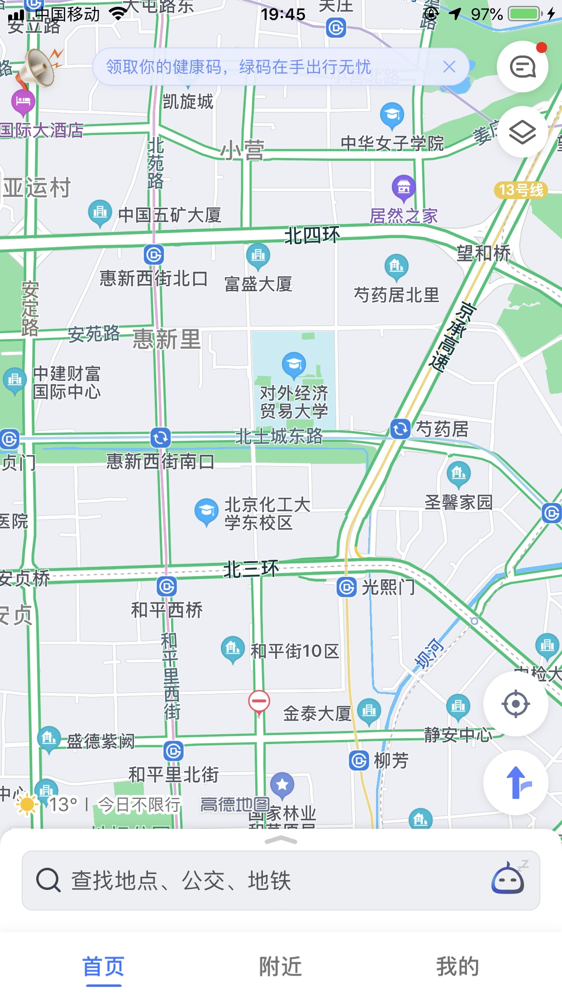
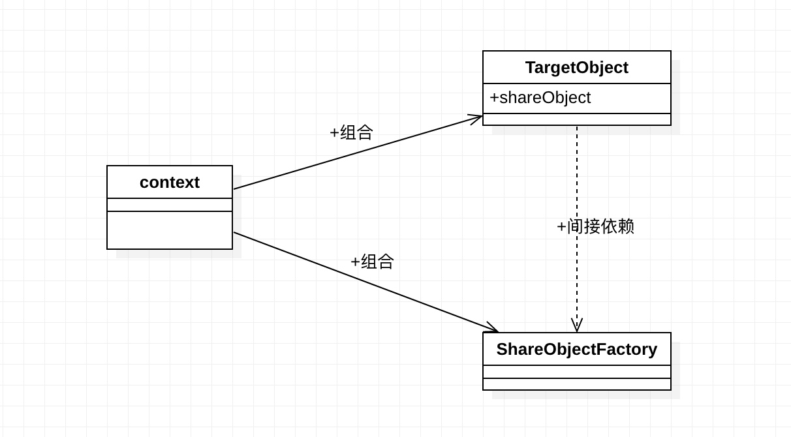

类别：结构型设计模式
目的：减少潜在的对象创建次数、尽可能延迟创建/重用对象，降低内存占用，并对代码实现结构进行限定
完整代码参考：https://1drv.ms/u/s!AquRvPzqx59Ri3URckgGBGw8WoWh?e=I6BRDg
典型场景
有许多不同种类的对象需要被使用，需要延迟对象的创建、同类对象会创建多次
比如一张地图中包含很多点，每个点会有一个图标表示这个地点的类型，比如餐厅、体育馆、办公楼、图书馆等。把这些点显示在地图上，程序需要先在内存中保存这些点
基本事实：
- 一张地图上可能会有成千上万的点需要绘制
- 每个地图点在地图上一般会以图片进行显示
- 一个图片文件内容占用的内容空间远超普通对象
- 为了避免地图加载过程中占用过多内存，有必要优化地图点上的内存空间占用
一张典型的地图参考如下：

可以看到，同类型建筑的图片是一样的
这里拿5个地图点进行举例：3个餐厅+2个体育馆
硬编码
构建代表地图点和图片类型
代表地图点图片类参考如下：
public class PointImage {
private final String type;
private final byte[] image;
public PointImage(String type, byte[] image) {
this.type = type;
this.image = image;
}
public String getType() {
return type;
}
}
地图点类参考如下：
public class Point {
private int longitude; // 经度
private int latitude; // 纬度
private PointImage image;
public Point(int longitude, int latitude, PointImage image) {
this.longitude = longitude;
this.latitude = latitude;
this.image = image;
}
public void display() {
System.out.printf("image: %s, longtitude: %d, latitude %d)", image.getType(), longitude, latitude);
}
}
很容易写出下面的生成5个带图片的地图点的代码、参考如下：
// 三个餐厅
var pointImage1 = new PointImage("restaurant", loadBytes("restaurant.png"));
var point1 = new Point(1, 2, pointImage1);
var pointImage2 = new PointImage("restaurant", loadBytes("restaurant.png"));
var point2 = new Point(1, 2, pointImage2);
var pointImage3 = new PointImage("restaurant", loadBytes("restaurant.png"));
var point3 = new Point(1, 2, pointImage3);
// 两个体育馆
var pointImage4 = new PointImage("stadium", loadBytes("stadium.png"));
var point4 = new Point(1, 2, pointImage3);
var pointImage5 = new PointImage("stadium", loadBytes("stadium.png"));
var point5 = new Point(1, 2, pointImage3);
从上面的代码可以看出
- 每个地图点包含一个图片，图片是地图点的元数据
- 加载了多张图片，同时一类图片可能会加载多次，造成内存浪费/或者内存溢出
- 每类建筑可以复用一张图片，但不同类型的建筑需要使用不同的图片
模式实现
使用一个单例对象表示一类建筑的图片，地图上存在多种类型的建筑，每个类型对应/复用一张图片，可以使用单例来表示一个图片对象，多类的建筑即会对应多个单例对象
存在多个单例可复用的对象，为了能够方便控制这些单例对象的创建，可以使用工厂设计模式来生成这些单例对象，并从在生成这些对象时进行检查，已生成过，直接返回即可
对应的单例工厂核心如下
public class PointImageFactory {
private Map<String, PointImage> imageList = new HashMap<>();
public PointImage getPointIcon(String type) {
if (imageList.containsKey(type)) {
return imageList.get(type);
}
PointImage pointImage = null;
switch (type) {
case "restaurant": // 餐厅
// 从文件加载餐厅图片到内存
pointImage = new PointImage(type, loadBytes("restaurant.png"));
break;
case "stadium": // 体育馆
// 从文件加载体育馆图片到内存
pointImage = new PointImage(type, loadBytes("stadium.png"));
break;
}
imageList.put(type, pointImage);
return imageList.get(type);
}
public static byte[] loadBytes (String ImageName) {
// 加载图片为byte实现...
}
}
可以看到，同类型的图片会被缓存在imageList列表中，再次请求同类型的图片，将直接从imageList列表中获取，无需重新创建了。
在创建地图上的点时，使用这个图片工厂创建点对应的图片，参考如下：
PointImageFactory imageFactory = new PointImageFactory();
// 三个餐厅
var point1 = new Point(1, 2, imageFactory.getPointIcon("restaurant"));
var point2 = new Point(1, 2, imageFactory.getPointIcon("restaurant"));
var point3 = new Point(1, 2, imageFactory.getPointIcon("restaurant"));
// 两个体育馆
var point4 = new Point(1, 2, imageFactory.getPointIcon("restaurant"));
var point5 = new Point(1, 2, imageFactory.getPointIcon("restaurant"));
UML

为什么享元模式更好
在对象数量特别庞大时能够有效减少程序内存空间的使用，对内存缓存的实现进行基本限定，减少不同的实现方式，造成增加维护成本
一些注意的点
可以看到享元设计模式的核心思想是缓存大内存对象，并对实现这个缓存进行基本的限定，即使组合使用工厂模式+单例对象（也可以叫单例工厂）
- 单例模式一般是管理一个单例对象，享元模式需要管理一组同类的单例独享
- 单例对象内部属性可以改变，但是享元中的单例创建后就是只读的了，即享元设计模式缓存的核心对象是不变的数据
享元模式特殊的地方在于同时组合使用了工厂模式和单例模式、工厂和单例都属于创建型设计模式，而享元模式更关注于代码结构，享元和其它两个设计模式关注的方向并不一样，不可把享元模式和工厂、单例等同。享元更多是关注于减少程序内存空间的使用。工厂和单例只是其实现目的的一种方式
java将图片文件读取为byte参考如下
public static byte[] loadBytes (String ImageName) {
byte[] bytes = null;
try {
// open image
File imgPath = new File(ImageName);
BufferedImage bufferedImage = ImageIO.read(imgPath);
// get DataBufferBytes from Raster
WritableRaster raster = bufferedImage .getRaster();
DataBufferByte data = (DataBufferByte) raster.getDataBuffer();
bytes = data.getData();
} catch (IOException e) {
e.printStackTrace();
}
return bytes;
}